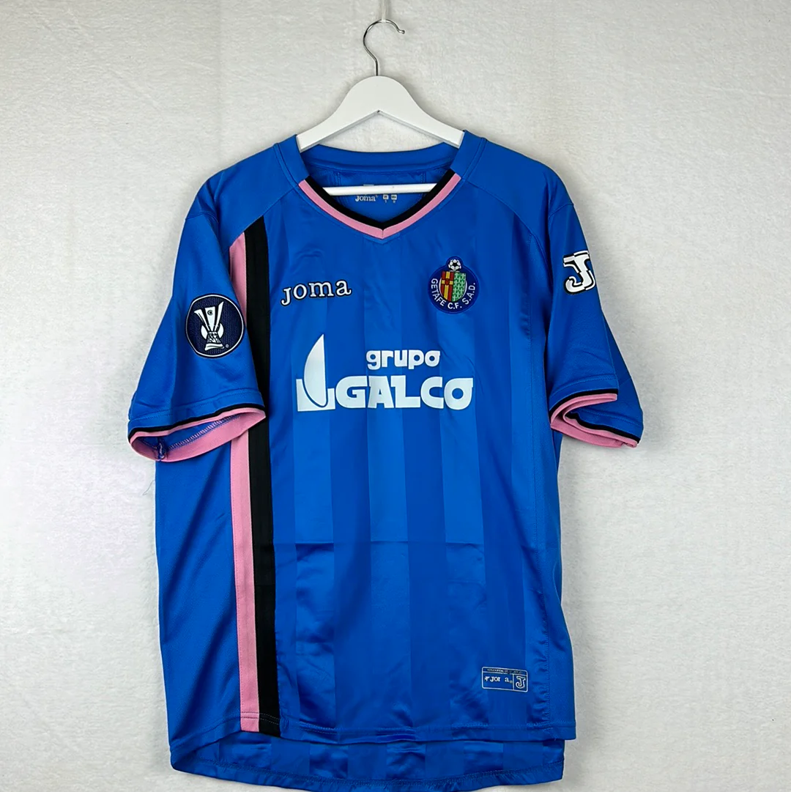

Esta es la cuarta equipación del Getafe C.F. de la temporada 2007/2008, un año histórico para el club por su primera participación europea. La camiseta, fabricada por Joma y con el patrocinador Grupo Galco, tiene una historia particular: Uso exclusivo en Europa: Esta equipación azul con detalles en rosa y negro fue utilizada exclusivamente durante la Copa de la UEFA (actual Europa League), y no en los partidos de Liga. Gestas europeas: Es especialmente recordada por los aficionados por la histórica eliminatoria de cuartos de final contra el Bayern de Múnich. El Getafe logró un empate 1-1 en el partido de ida en el Allianz Arena y estuvo muy cerca de eliminar al gigante alemán en el partido de vuelta en el Coliseum Alfonso Pérez.
